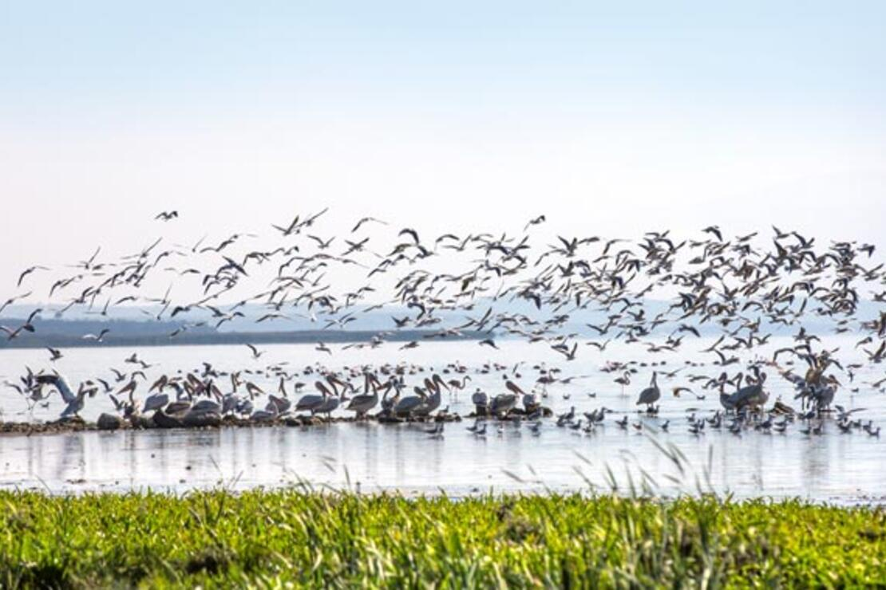
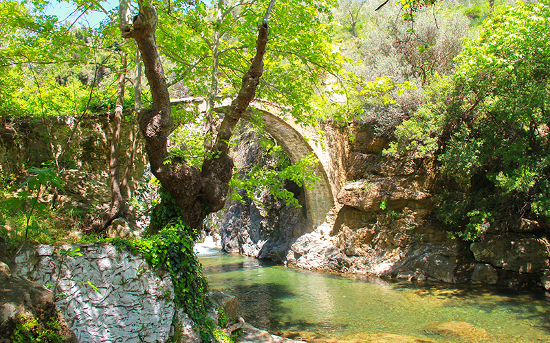

Let's start with what this city has (touristic places,important people etc.) and it's geographical location.
This is manyas kus cenneti,it is a very touristic place because 266 different type birds visit this place every year.
It reached the national park status in 1959 and this place is 24.767 hectars.That's 20.602 cars approximatly
In 1975 by Council of Europe it has been given the "A class certificate which means it is very important internationally.
Kazdağı milli parkı is beatiful place that everyone should visit